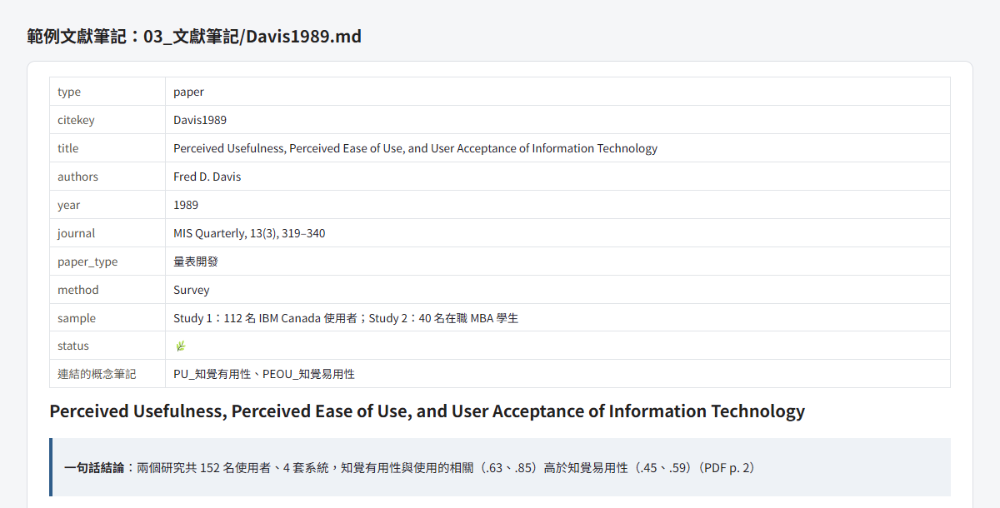

論文筆記庫範本
給碩士生用的 Obsidian 筆記庫。讀過的論文、研究的構念、假說的推導，分成五種筆記存放，寫第二章、第三章時直接從筆記取材。範本附了模板、填寫規則、一張文獻矩陣，以及可以直接貼給 AI 的 prompt。

03_文獻筆記/Davis1989.md 的開頭，這裡用網頁排版呈現 Markdown 原文，不是 Obsidian 截圖。點圖看完整檔案。你是不是卡在這裡
在整套論文流程的哪一站
論文指南每一站該怎麼做，都有一頁說明- 找題目thesis-toolkit
- 讀文獻論文筆記庫範本你在這裡
- 設計與分析論文筆記庫範本你在這裡
- 寫論文thesis-toolkit
- 口試與修訂md-to-slides
怎麼裝
- 用 AI 安裝：在終端機開 Claude Code 或 Codex，貼上 prompt 第 0 段。
- 自己來：在 GitHub 頁面按綠色 Code、Download ZIP，解壓縮後用 Obsidian「開啟資料夾作為儲存庫」，先讀
00_總覽/開始使用.md。 - Zotero 的 citekey 公式看 README 的「Zotero 怎麼接」；日期格式、中文作者姓名怎麼填，看 mis-thesis-guide 的文獻管理頁 2.3.6、2.3.8 節。
- 想連 thesis-toolkit 一起裝好，用論文指南的整套安裝。
範本裡的 Davis1989、PU_知覺有用性、知覺有用性→使用意圖 是一組填好的示範，彼此有連結，看懂後可以刪掉。
限制
範本不會替你讀論文。AI 寫的論文卡要在新對話對回原文，不通過的地方自己回 PDF 看；對你研究的用處標成〔推論〕的句子，自己改寫或刪掉。「本研究的切入點」也由你來寫。
它解決什麼問題
文獻讀了幾十篇，筆記散在 PDF 劃線、Word 和腦袋裡；到了要寫文獻探討時，又得一篇一篇翻回去找「誰說過這個構念怎麼定義」。這個範本把筆記拆成五種，彼此用連結串起來：
每讀一篇就寫一張論文卡，連到它談到的構念。要寫某個構念那一節時，打開構念卡，所有提過它的論文卡都列在反向連結裡。
五種筆記
論文卡
03_文獻筆記，一篇論文一張分實證型、理論型、方法型三種模板。數字和定義附 PDF 頁碼，原文找不到就寫 TBD。
構念卡
02_變數，一個構念一張定義與構念邊界、各篇的共識與爭議、操作化與測量。第二章每一節從這裡寫。
推演卡
05_假設推演，一條假說一張用關係命名，例如 知覺有用性→使用意圖。寫清楚理論怎麼推、哪幾篇實證撐著。
理論卡
01_理論，一個理論一張核心預測與機制、邊界與競爭理論，以及在你的研究裡怎麼對應。
方法卡
06_方法，一種方法或指標一張例如 PLS-SEM、共同方法偏誤。第三章的分析步驟和門檻值從這裡來，每個門檻附出處與頁碼。
論文卡
一篇論文一張，連到它談到的構念。
構念卡、推演卡
構念卡從反向連結收集論文卡的材料；推演卡寫一條假說怎麼推、靠哪幾篇撐著。理論卡、方法卡也在這一層。
04_論文草稿
- 第二章：理論卡、構念卡
- 假說推導：推演卡
- 第三章：方法卡
另外兩份總表放在 00_總覽：術語表.md 固定每個構念的中文譯名，研究設計速查.md 放研究問題和假說表。整個筆記庫只有這張表和推演卡寫假說編號，假說改版時，論文卡一份都不用動。
流程
- 安裝與匯入裝好 Zotero、Better BibTeX、Obsidian，下載範本，用 Obsidian 開啟。Prompt 第 0 段：Claude Code 或 Codex 幫你裝，畫面上的設定一步一步帶你點。
- 填兩份總表從計畫書整理出術語表和研究設計速查。Prompt 第 1 段：AI 從計畫書填初稿，前後不一致的地方列給你決定。
- 找論文、寫論文卡看假說表哪條證據薄，帶著缺口去找文獻，存進 Zotero。讀完照填寫規則寫論文卡，檔名用 Zotero 的 citekey。Prompt 第 2 段：AI 用 citekey 找到 Zotero 裡的 PDF 直接讀，寫出筆記草稿。
- 開新對話核對寫筆記的那個對話看不出自己的錯，換一個對話，最好換一個模型，逐條對回原文。Prompt 第 3 段：抽查數字、頁碼、構念有沒有被改名、用詞有沒有比研究設計更強。
- 寫推演卡每條假說一張，看清楚每條箭頭要靠哪幾篇撐；證據不夠就回第 3 步。Prompt 第 5 段：檢查推導有沒有跳步、證據型態填得對不對。
- 收料進構念卡打開構念卡，從反向連結把論文卡的材料整理成定義、共識、爭議。Prompt 第 4 段：AI 整理草稿，每句標出來自哪張論文卡。
- 寫正文面對構念卡、推演卡、方法卡寫
04_論文草稿，不直接面對論文卡。參考文獻交給 Zotero 產生。
AI 在每一步做什麼、你做什麼
| 步驟 | AI 做 | 你做 |
|---|---|---|
| 寫論文卡 | 讀全文、填模板、每個數字標頁碼，對你研究的用處標成〔推論〕草稿 | 確認頁碼範圍涵蓋全文，〔推論〕的句子自己改寫或刪掉 |
| 核對 | 在新對話逐條對回原文，列出不通過的地方 | 不通過的地方自己回 PDF 再看一次，處理完填上 verified 日期 |
| 構念卡 | 從論文卡整理共識與爭議，每句附來源 | 抽 3 個來源回論文卡核對，「本研究的切入點」自己寫 |
| 推演卡 | 找推導跳步、檢查證據型態 | 補得起來的自己補，補不起來的帶去問老師 |
Prompt 都有網頁版（ChatGPT、Claude 的專案）和 CLI 版（Claude Code、Codex）兩種。範本本身不放任何 AI 工具的設定檔，不用 AI 也能照模板手寫。